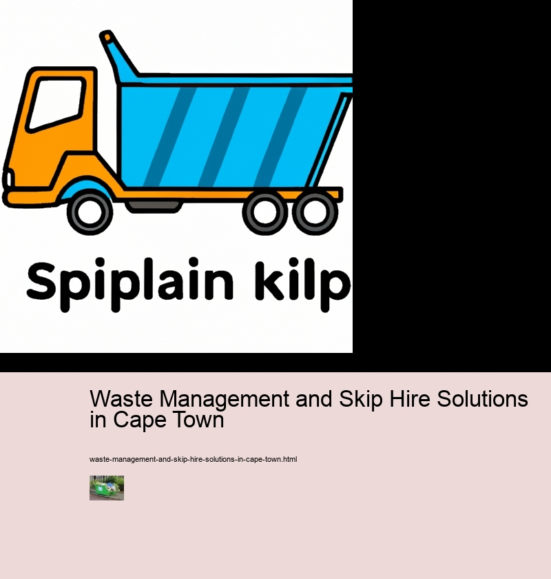

Waste Management and Skip Hire Solutions in Cape Town
Junk removal
Benefits of Professional Skip Hire Services
Skip hire services offer numerous advantages to waste management and skip hire solutions in Cape Town. Firstly, they provide a quick and efficient solution that helps to reduce the amount of time spent on waste collection and disposal. Additionally, these services can help to reduce the environmental impact of disposing of large amounts of waste, as it allows for more efficient recycling processes.
Furthermore, professional skip hire services are cost-effective since they require minimal workforce and equipment, thus reducing operational costs. Plus, they also provide convenience for clients who don't have the resources or capacity to manage their own waste disposal processes. This eliminates the need to pay for expensive waste collection services from other providers.
Moreover, professional skip hire services ensure safety standards in line with local regulations by using appropriate safety measures such as proper handling techniques and protective clothing for personnel involved in the process. In addition, these services use specialised containers that prevent accidents caused by hazardous materials spilling over or out of the container during transportation.
In conclusion, professional skip hire services offer numerous benefits to businesses operating in Cape Town's waste management industry. They provide a quick and cost-efficient solution while ensuring safety standards are met throughout the process. Therefore, opting for these services can be hugely beneficial for any business looking to improve its waste management strategy in this area.
Types of Waste That Can Be Disposed of by Professional Skip Hire Companies
Skip hire companies in Cape Town offer a wide range of waste management and skip hire solutions. Skip hire is an effective way to dispose of many types of waste that cannot be recycled or disposed of through other means. Not only can these services help to reduce the amount of trash sent to landfills, but they provide a safe and efficient way for businesses and households to get rid of their unwanted materials.
Types of waste that can be disposed of by professional skip hire companies include commercial, industrial, hazardous and domestic waste. Commercial waste includes items such as cardboard boxes, packaging materials, paper products and office furniture. Industrial debris like metals, wood chips and industrial chemicals can also be removed with a skip bin. Hazardous wastes from construction sites like asbestos-containing materials must be carefully handled by trained professionals due to their toxicity levels. Finally, domestic rubbish like food scraps, old furniture or clothes can all be taken away safely with a reliable skip hire service in Cape Town.
Furthermore, many skip hire companies offer additional services such as composting services which allow customers to recycle organic matter into nutrient-rich soil for gardening purposes. In addition to this, some specialize in hazardous material disposal including oil drums or chemical containers which must be properly stored and transported away from the site before being discarded safely elsewhere.
Waste Management and Skip Hire Solutions in Cape Town - Transfer trailers
- Junk removal
- Transfer trailers
- Roll off containers
Overall, professional skip hire companies provide an invaluable service when it comes to managing different types of waste in Cape Town efficiently and sustainably. By using their services you are not only protecting the environment but also helping your business run more smoothly without having to worry about storage space or dealing with hazardous material yourself - thereby making sure that everything is disposed off correctly according to local regulations.
Different Sizes of Skips Available For Different Job Requirements
Skip hire is a great way to manage waste in Cape Town. There are different skip sizes available for various job requirements, so it’s important to choose the right one. Smaller skips are ideal for smaller projects such as garden clearance or home DIY jobs. Medium-sized skips, meanwhile, can be used for bigger jobs like house renovations or small renovation works. Finally, large skips are perfect for big construction and demolition projects.
Furthermore, there are also extra-large skips available for those with really bulky items to dispose of such as furniture or large amounts of rubble and soil. These extra-large skips can hold up to 12 cubic meters of waste material – enough to fill a truckload! Moreover, they come with lids so that everything stays secure until being collected by the skip hire company.
Moreover, most skip hire companies offer a range of additional services such as the collection of hazardous materials like paint, solvents and oils; and the provision of specialist equipment including safety barriers and signs for larger sites. This ensures that your job is completed safely and efficiently while complying with all local regulations regarding waste management and disposal.
In conclusion, there are several different sizes of skips available for different job requirements in Cape Town’s waste management and skip hire solutions industry. From small skips perfect for domestic clearances through to extra-large ones suitable for bulky items – you’re sure to find the right size solution to suit your needs!
Guidelines for Using a Professional Skip Hire Company in Cape Town
Waste Management and Skip Hire Solutions in Cape Town is a complex field. When using a professional skip hire company, there are certain guidelines that should always be followed. Firstly, it’s important to ensure that the company is well-established and has good reviews from past customers. Moreover, they must provide an efficient service with competitive rates. On top of that, check whether the company adheres to all environmental regulations; this is crucial for sustainable waste management.
Moreover, consider asking about any additional services offered by the company such as rubbish removal or recycling assistance. Additionally, inquire about their safety protocols and ask if they have insurance coverage in case of any accidents or damage caused during the skip hire process. Furthermore, make sure you enquire about payment methods and find out what the total cost will be – including any hidden fees or extra charges that may not be initially disclosed.
Nonetheless, once you have chosen a skip hire provider it's essential to communicate your requirements clearly; inform them of the exact type of waste disposal needed as well as how long you need their services for. Above all else, ensure that there’s an agreement in place detailing both parties' rights and obligations before signing anything!
By following these simple guidelines when hiring a professional skip hire company in Cape Town you can rest assured that your project will be handled efficiently and safely while also being mindful of the environment too!
Tips for Selecting the Best Waste Management and Skip Hire Solution Provider in Cape Town
Selecting the best waste management and skip hire solution in Cape Town can be a daunting task. With so many different providers to choose from, it can be hard to decide which one is right for you. But with a few tips, you'll be able to find the perfect fit for your needs.
Firstly, it's important to research potential providers thoroughly. Read reviews from past customers and ask around in your local area for any recommendations.
Waste Management and Skip Hire Solutions in Cape Town - Roll off containers
- Junk removal
- Transfer trailers
- Roll off containers
Secondly, don't forget to compare prices between different companies. It's likely that there will be several competitively priced solutions available, so take some time to shop around and ensure you get the best value for money! Also consider whether or not they offer discounts for bulk orders as this could help save on costs further down the line.
Finally, keep an eye out for any special offers or deals that may be available at certain times throughout the year. These can sometimes include extra services such as collection or delivery at no additional cost - something which could prove invaluable when trying to stay within budget!
In conclusion, selecting the ideal waste management and skip hire solution provider doesn't have to be a difficult task if you follow these simple tips. Do your research beforehand; compare prices; and keep an eye out for any special offers - then sit back & relax knowing that your project is in safe hands!
Environmental Considerations When Utilizing a Professional Skip Hire Service in Cape Town
When looking for a professional skip hire service in Cape Town, it is important to consider the environmental aspects of the waste management process.
Waste Management and Skip Hire Solutions in Cape Town - Roll off containers
- Junk removal
- Transfer trailers
- Roll off containers
Firstly, it's essential to choose a company that has an excellent record on recycling and re-use. Ask if they offer any incentives or discounts for customers who recycle more than usual - this could save you money as well as helping the environment. Additionally, inquire about their waste disposal processes: do they take all types of waste? Do they separate materials like paper and cardboard for easy recycling? Answering these questions can help you make an informed decision when selecting your skip hire service.
Furthermore, look into whether the company uses renewable energy sources or has taken other measures to reduce their emissions. If possible, try to use local services rather than those from elsewhere in South Africa - this cuts down on transportation costs which can have a major impact on air pollution levels. Finally, don't forget to ask about hazardous materials such as asbestos or chemicals; reputable companies should be able to provide safe disposal methods for these substances.
Overall then, when utilizing a professional skip hire service in Cape Town it's crucial not only to consider cost and convenience but also how environmentally friendly the company is likely to be. Taking into account these environmental factors can not only help protect our planet but also save money in the long run by reducing wastage and increasing efficiency.
Summary
Waste management and skip hire solutions in Cape Town can be daunting, but they don't have to be! With the right guidance and resources, it's possible to find reliable services that make managing waste easier. Thankfully, there are plenty of providers in Cape Town offering a range of options for skip hire and waste management.
When selecting a service, it’s important to consider your needs – from size and type to cost – so you can find the best solution for your requirements. Also, ensure that any provider you consider has a quality reputation. Check online reviews as well as ask friends or family who may have used similar services.
Furthermore, many companies offer additional services such as recycling and composting facilities which can help reduce your environmental impact. Additionally, some may also provide assistance with hazardous materials like asbestos or medical waste. It pays to do research beforehand so you get the most satisfactory results.
Waste Management and Skip Hire Solutions in Cape Town - Mixed waste processing
- Junk removal
- Transfer trailers
- Roll off containers
Overall, finding suitable waste management and skip hire solutions in Cape Town doesn't have to be difficult! With careful planning and consideration of all available options, anyone can make sure their needs are met without hassle or stress. Moreover, taking advantage of additional features such as recycling or composting facilities is an excellent way to become more sustainable while still being able to manage your waste effectively. Now that's something worth considering!